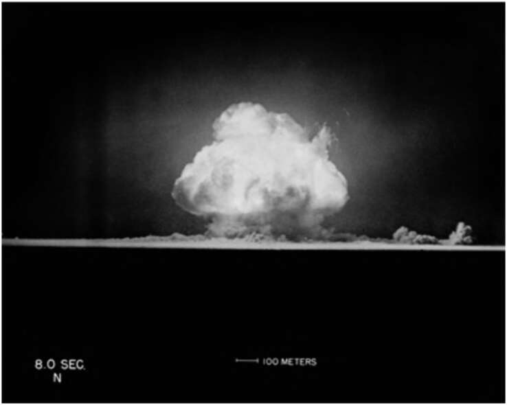

Part Four The Scientific Revolution 32. Alamogordo, 16 July 1945, 05:29:53. Eight seconds after the first atomic bomb was detonated. The nuclear physicist Robert Oppenheimer, upon seeing the explosion, quoted from the Bhagavadgita: ‘Now I am become Death, the destroyer of worlds.’
